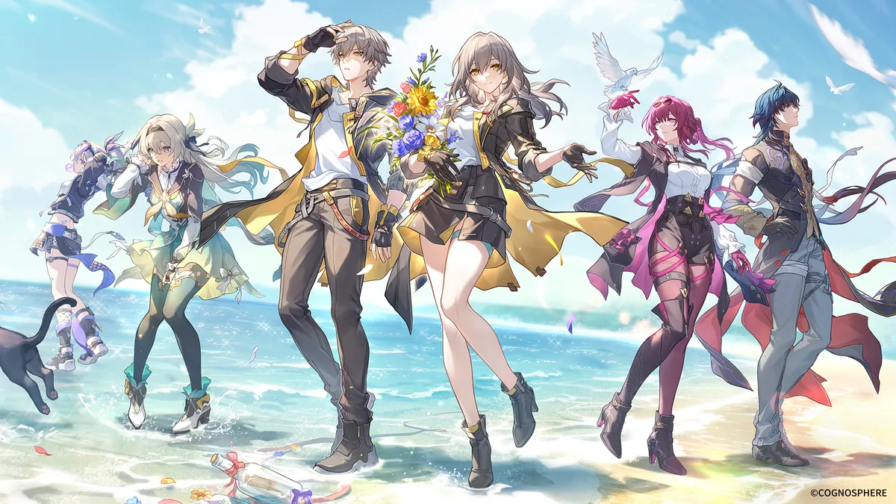

崩壊スターレイル

このゲームは、主人公たちが宇宙の様々な星を旅して開拓していくコマンド・ターン制RPGです。
キャラクターデザインと毎度驚かされるストーリーが魅力的で、
キャラクターそれぞれが保有するスキルや必殺技のモーションがとくにおすすめです。
このゲームは、主人公たちが宇宙の様々な星を旅して開拓していくコマンド・ターン制RPGです。
キャラクターデザインと毎度驚かされるストーリーが魅力的で、
キャラクターそれぞれが保有するスキルや必殺技のモーションがとくにおすすめです。
このゲームは、アニメ「陰の実力者になりたくて!」を題材とした3DアニメーションRPGです。
イベントごとに見られるキャラクターの限定イラストやキャラクターたちの幼少期やアニメで放送されなかった裏ストーリーを見られることが魅力的で、
原作者の逢沢大介先生が完全監修したゲームオリジナルストーリーである「散りゆく陰への鎮魂歌」がとくにおすすめです。
このゲームは、3人1組のチームで戦うバトルロイヤルゲームです。
リアルでは味わえない銃を使った戦闘と使用するキャラによって変わる戦略が魅力的で、
フレンドだけでやるAPEXはとくにおすすめです。